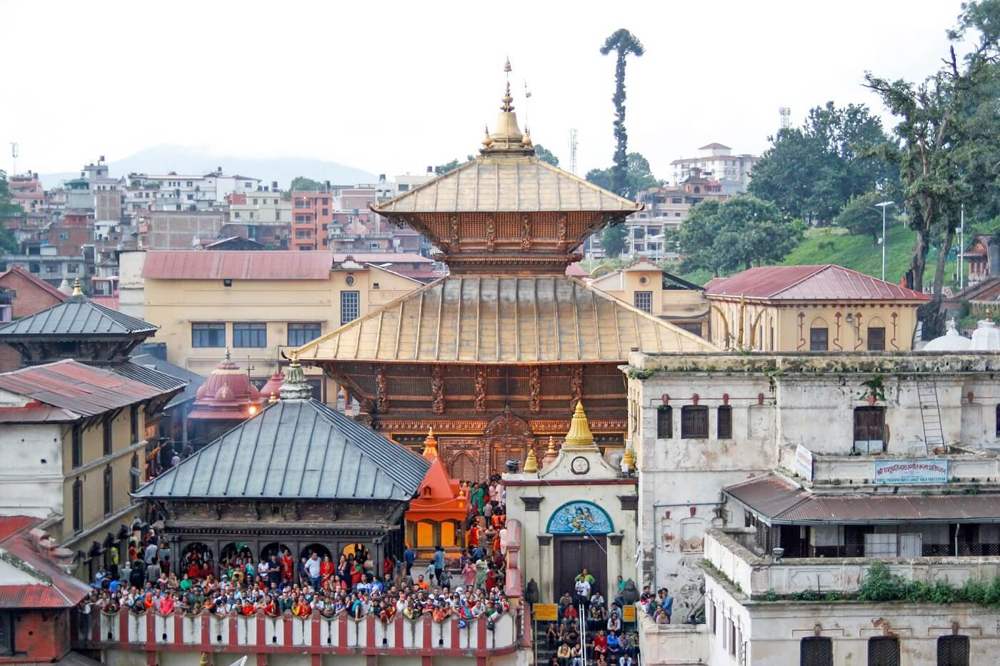
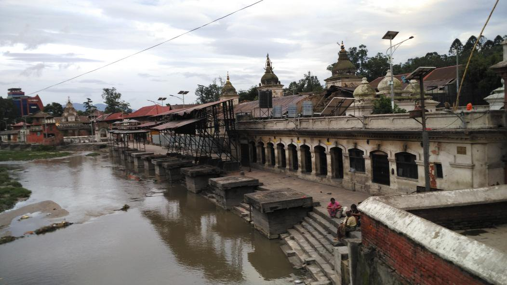

Time:


Pashupatinath is more than just a religious destination. It is a combination of religion, art, and culture. It offers peace and devotion. The temple, spread across 246 hectors of land abounds in temples and monuments. Hundreds of rituals are performed here every day. The temple premises is an open museum. This national treasure was designated a UNESCO World Cultural Heritage Site in 1979.
This temple is an important destination for art historians. It displays a variety of temple design some of which are Dome style, Pagoda style, Shikhara style and so on. Additionally there are varieties of statues and sculptures around the complex. There are statues made out of stone, metal, and wood. The door and pillars around the temple area are carved in beautiful shapes of God and griffins. Pashupatinath stretches from the main temple of Pashupatinath to Guheshwori. There are many famous temples inside this area including the Bhuwaneshwori, the Dakshinamurti, Tamreshwor, Panchdewal, Bishwarupa, and others.

The temple of Kali, located on the banks of River Bagmati has an interesting appearance and loaded with mythology. The myth is that the statue grows out of its original spot and that the world will come to an end when the half-in half-out figure is fully exposed. Each temple has its own set of rituals to be performed, and every temple has specific values and customs. On the other side of the river is a small forest Shleshmantak, home to animals like deer and monkeys. A traditional crematorium stands on the banks of the River Bagmati.
Pashupatinath's vast area embraces cultural heritage, forest, and water resources which need to be preserved and managed. Hence the Pashupati Area Development Trust (PADT) was founded in 1996. Since then, the activities at Pashupati are governed by this administrative body.

Copyright © 2019 Abiral Pandey